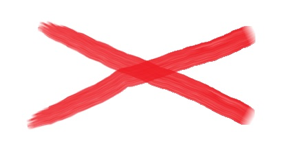

PWA de Exemplo 09
Eis o momento de finalmente criarmos um PWA capaz de funcionar offline (o que significa que este é o único PWA de verdade 😉). Para isso, utilizaremos as API's Cache Storage e Cache API.
A ideia é armazenar em cache todos os arquivos necessários durante o processo de instalação. A partir daí, toda vez que o evento fetch for executado, primeiro iremos tentar retornar o recurso a partir do cache, recorrendo à rede apenas caso o recurso não exista no cache. Essa técnica é conhecida como "Cache First", e ajuda a acelerar muito o desempenho da página, além de aliviar a carga do servidor. Para ver como isso funciona, vamos olhar o arquivo do Service Worker.
Para testar a questão do funcionamento offline basta utilizar a opção "Offline" nas ferramentas de desenvolvedor, em "Application > Service Workers".
O estado atual do cache também está nas ferramentas de desenvolvedor, em "Application > Cache > Cache Storage".
Cuidado para não ser enganado pelo cache do próprio navegador!!! Para testar se tudo está OK de verdade, além de marcar a opção "Offline", é preciso marcar a opção "Disable cache" em "Network". Ao fazer isso, veremos que nosso cache não está completo, pois não adicionamos a ele as fontes utilizadas pela página, que são as fontes do Google Fonts. Existe uma forma fácil de fazer isso, sem precisar ficar digitando o nome dos arquivos das fontes do Google (ou qualquer outro recurso de terceiros), como mostrado no arquivo sw2.js (tente substituir o Service Worker atual por esse, e veja a diferença).
Por fim, o arquivo sw3.js mostra uma possível técnica de lidar com casos quando o aplicativo (um jogo, por exemplo) sofrer alterações. Como estamos usando o cache antes de ir buscar na rede, o usuário poderia nunca ver a noa versão do jogo! 😱 Assim, para que o usuário final veja as alterações, basta alterar algo no Service Worker, como a string com o nome do cache, o que fará com que o navegador reinstale o Service Worker. Nesse momento criamos um cache com um novo nome, e esperamos o evento activate (que indica que nenhum outro cliente está mais utilizando as versões antigas do Service Worker) para excluir o(s) cache(s) antigo(s), removendo dados inúteis do dispositivo do usuário.
O arquivo sw-original.js contém o código original do Service Worker, para caso você se perca durante os experimentos 😁.
A imagem é só para ter uma imagem, mesmo... 😁
O código-fonte e as explicações podem ser encontradas no GitHub do projeto: github.com/tech-espm/labs-pwa 😊.